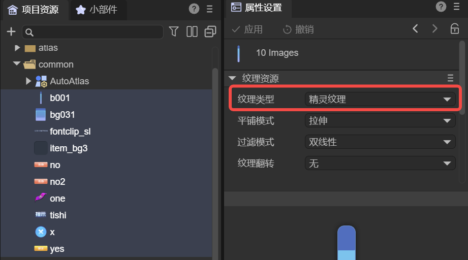
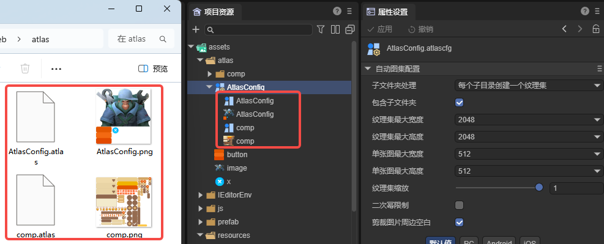
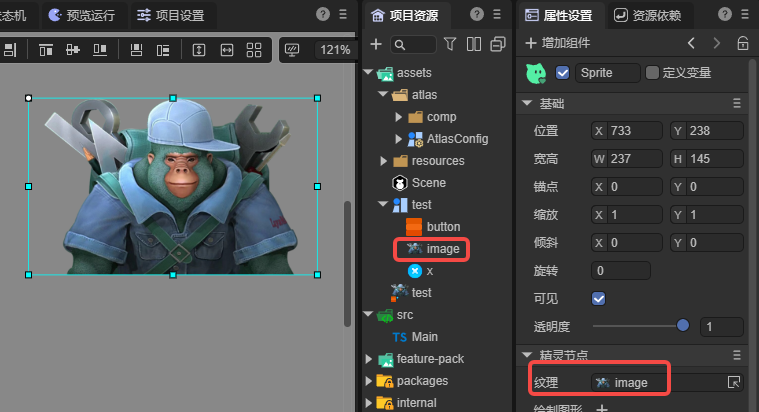

自动图集配置
Author: Charley
1、图集基础
1.1 什么是图集
在游戏开发中，图集（Texture Atlas）的全称是大图合集，是一种整合多张小图片为一张大图片的资源优化技术，具有减少DrawCall、减少纹理切换次数、减少I/O请求等优势。是2D产品类型用于提升渲染性能、提升显存利用率的关键手段之一。
1.2 如何制作图集
在LayaAir3-IDE中，图集的生成方式，有两种，分别是手动制作图集和自动制作图集。
1.2.1 手动制作图集
第一种方式，通过菜单栏执行： 工具 → 制作图集，打开图集制作工具。
在该工具中拖拽或选择 图片所在文件夹，点击制作按钮，即可将其中的多张小图合并生成图集，如图1-1所示。

(图1-1)
生成结果包括两部分：
- 一张
.png后缀的大图资源文件； - 一个
.atlas后缀的图集配置文件，用于记录每张小图的名称、位置及尺寸等信息。
1.2.2 自动制作图集
第二种方式，是本篇文档重点介绍的自动制作图集。
自动图集通过一个 自动图集配置文件（AutoAtlas.atlascfg） 实现。
在日常开发中，开发者无需手动操作或感知图集生成过程，正常使用小图资源即可。系统会在发布构建或运行调试时自动生成并使用对应的图集资源，从而实现性能优化的自动化。
要创建自动图集配置，只需在资源面板中选中目标图片目录，右键菜单 → 创建 → 自动图集配置，即可生成 AutoAtlas.atlascfg 文件，如图1-2所示。

(图1-2)
自动图集配置文件的详细属性说明将在第2小节中介绍。
需要注意的是，被纳入自动图集的小图资源，必须是 精灵纹理（spriteTexture） 类型，如图1-3所示。只有符合此类型的资源，才会在打包时被正确识别并合并到图集中。

(图1-3)
开发者可以选中一个或多个图片，统一设置纹理类型
2、自动图集配置说明
2.1 文件夹与子目录设置
针对文件夹的处理包含两个配置项：包含子文件夹与子文件夹处理。如图2-1所示，

（图2-1）
- 包含子文件夹 (includeSubFolders)
- 未勾选：仅将当前文件夹（自动图集配置所在目录）下的图片打包进图集。
- 勾选：递归扫描所有子文件夹，将其内部的图片也一并纳入打包范围。
- 子文件夹处理 (perFolder)
- 共用一个图集：将当前目录及所有子文件夹中的图片，统一打包到同一个图集中。
- 每个子目录创建一个图集：根据目录结构，为每个子文件夹分别生成独立的图集。
2.2 图集最大宽度 / 高度
用于限制单个图集能达到的最大尺寸，默认值为 2048 × 2048。
当某个图集中的内容超过该尺寸限制时，IDE 会自动生成新的图集文件（即一个目录可能被拆分成多个图集）。
2.3 单图最大宽度 / 高度
用于限制单张图片是否允许进入图集。默认值为 512 × 512。
若某张图片的宽或高超过该数值，则不会被打包到图集中。
通常不建议将超过 512 × 512 的大图放入图集，大图更适合作为单独纹理提前加载。
2.4 图集缩放
用于等比例缩放图集中所有图片。例如设置为 0.5，IDE 会将原图宽高分别按 0.5 缩放后再放入图集。渲染时仍按原尺寸显示。
缩放可以显著减少图集体积，属于一种“轻量压缩”策略，但会影响显示精度。
如需保持设计时的清晰度，建议保持默认值 1。
2.5 二次幂限制
如果勾选，则生成的图集图片宽高将会是2的整次幂。例如，宽753高500，勾选二次幂限制后，宽高会变成1024和512。除非是面临某些强制要求按2的整次幂的运行环境，常规情况下无需勾选。
2.6 过滤模式
图集中的散图不会继承各自原始纹理的过滤模式，因此过滤模式需要在自动图集配置中统一设置，它将应用到最终生成的图集纹理上。
过滤模式影响纹理在缩放时的采样方式，从而影响清晰度和过渡平滑度。
如需了解更详细的纹理过滤原理，可参考文档《纹理资源》。
2.7 剪裁周边空白
启用后，IDE 会自动裁剪掉原始图片四周的透明空白区域，以减少图集占用空间。
该选项默认开启，通常无需关闭。
2.8 纹理格式
图集支持三种类型的纹理格式：
- RGBA32（R8G8B8A8）：默认格式，每像素占 32 位，包含红、绿、蓝、透明四个通道。
- RGB24（R8G8B8）：每像素占 24 位，仅包含 RGB 三通道，不带透明通道。
- 压缩纹理格式：使用 GPU 专用压缩算法（如 ETC、ASTC 等），能显著降低显存占用，适用于需要优化性能的项目。
更详细的说明，可参照纹理压缩文档《纹理压缩》。
3、如何使用图集
3.1 图集资源介绍
图集打包完成后，每个图集都会生成两类文件：同名的 .atlas 数据文件与 .png 纹理文件。
散图与图集命名存在如下规则：
- 散图位于自动图集配置所在目录时，图集名称与自动图集配置文件名一致。
- 散图位于其子目录时，图集名称与该子目录名称一致。
不论散图位于哪个子目录，生成的图集文件（.png 与 .atlas）都会统一输出到自动图集配置所在目录。如图 3-1 所示。

（图3-1）
可以看出，生成后的png格式图片中，小图的纹理已合并到一起。而.atlas则是图集的数据文件，用于存储散图文件名、位置、宽高等信息。
3.2 如何使用图集的小图
3.2.1 无感使用自动图集
通过自动图集配置生成的图集，对开发者而言是“无感”的。
无论在 IDE 中还是代码中，开发者始终以小图的原相对路径访问资源即可。图集的构建、加载、解析均由IDE与引擎自动完成。
引擎在使用任意小图时，会自动加载该小图所在的整张图集。因此，图集只是引擎提供的一种纹理优化手段，开发者无需额外处理。
3.2.2 使用手动制作的图集
除自动图集外，也可以使用手动制作的图集文件。
在 LayaAir3 IDE 中，.atlas 文件支持展开显示图集中包含的小图。
在实际使用时，可以直接将某个小图从资源面板拖拽到组件的纹理属性中。如图 3-2 所示。

(图3-2)
3.2.3 预加载图集
资源的加载是异步的，因此有的时候逻辑开始执行了，但资源还没有加载好。有的时候，为了更好的体验，一些图集需要预先加载好，然后再使用。
尤其是手动制作的图集，通过代码访问时，必须先加载 .atlas 文件。
示例代码如下：
const { regClass, property } = Laya;
@regClass()
export class NewScript extends Laya.Script {
declare owner: Laya.Image;
//组件被启用后执行，例如节点被添加到舞台后
onEnable(): void {
//需要先加载图集再使用，注意，图集要放到resources目录下或者在构建发布配置项里手动添加为始终包含的资源目录
Laya.loader.load("resources/aaa/test.atlas").then(() => {//更多资源加载方式，可查看《资源加载》文档
this.owner.skin = "resources/aaa/image.png"; //将图集路径+名称视为小图的资源目录，小图名称就是图集中的原小图名称
})
}
}